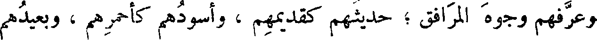
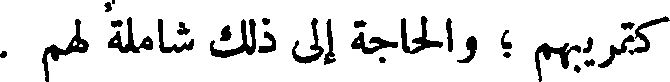
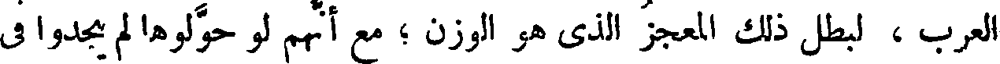
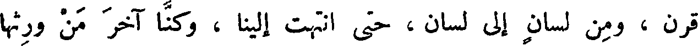
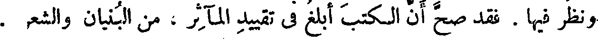
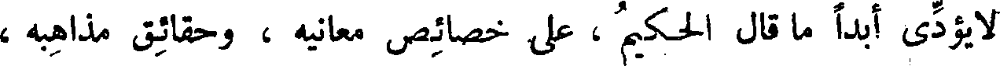
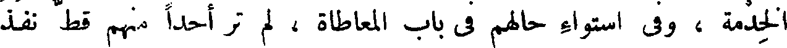

File: 000420.gt.txt (if the image is defective, simply delete all Arabic text and the line will be excluded)
كالكلام المنثور . والكلام المنثور المبتدأ على ذلك أحسن وأوقع من
File: 000421.gt.txt (if the image is defective, simply delete all Arabic text and the line will be excluded)
المنثور [ الذي تحول من ] موزون الشعر .
File: 000422.gt.txt (if the image is defective, simply delete all Arabic text and the line will be excluded)

قال : وجميع الأمم يحتاجون إلى الحكم في الدين ، والحكم في
File: 000423.gt.txt (if the image is defective, simply delete all Arabic text and the line will be excluded)
الصناعات ، وإلى كل ما أقام لهم المعاش وبوب لهم أبواب الفطن ،
File: 000424.gt.txt (if the image is defective, simply delete all Arabic text and the line will be excluded)

وعرفهم وجوه المرافق ؛ حديثهم كقديمهم ، وأسودهم كأحمرهم ، وبعيدهم
File: 000425.gt.txt (if the image is defective, simply delete all Arabic text and the line will be excluded)

كقريبهم ؛ والحاجة إلى ذلك شاملة لهم .
File: 000426.gt.txt (if the image is defective, simply delete all Arabic text and the line will be excluded)
وقد نقلت كتب الهند ، وترجمت حكم اليونانية ، وحولت آداب
File: 000427.gt.txt (if the image is defective, simply delete all Arabic text and the line will be excluded)
الفرس ؛ فبعضها ازداد حسنا ، وبعضها ما انتقص شيئا ، ولو حولت حكمة
File: 000428.gt.txt (if the image is defective, simply delete all Arabic text and the line will be excluded)

العرب ، لبطل ذلك المعجز الذي هو الوزن ؛ مع أنهم لو حولوها لم يجدوا في
File: 000429.gt.txt (if the image is defective, simply delete all Arabic text and the line will be excluded)
معانيها شيئا لم تذكره العجم في كتبهم ، التي وضعت لمعاشهم وفطنهم
File: 000430.gt.txt (if the image is defective, simply delete all Arabic text and the line will be excluded)
وحكمهم . وقد نقلت هذه الكتب من أمة إلى أمة ، ومن قرن إلى
File: 000431.gt.txt (if the image is defective, simply delete all Arabic text and the line will be excluded)

قرن ، ومن لسان إلى لسان ، حتى انتهت إلينا ، وكنا آخر من ورثها
File: 000432.gt.txt (if the image is defective, simply delete all Arabic text and the line will be excluded)

ونظر فيها . فقد صح أن الكتب أبلغ في تقييد المآثر ، من البنيان والشعر .
File: 000433.gt.txt (if the image is defective, simply delete all Arabic text and the line will be excluded)
ثم قال بعض من ينصر الشعر ويحوطه ويحتج له : إن الترجمان
File: 000434.gt.txt (if the image is defective, simply delete all Arabic text and the line will be excluded)

لا يؤدي أبدا ما قال الحكيم ، على خصائص معانيه ، وحقائق مذاهبه ،
File: 000435.gt.txt (if the image is defective, simply delete all Arabic text and the line will be excluded)
المعرفة ثقافا لها . واللسان لا يكون أبرأ ، ذاهبا في طريق البيان ، متصرفا في
File: 000436.gt.txt (if the image is defective, simply delete all Arabic text and the line will be excluded)
الألفاظ، إلا بعد أن تكون المعرفة متخللة به ، منقلة له،واضعة له في مواضع
File: 000437.gt.txt (if the image is defective, simply delete all Arabic text and the line will be excluded)
حقوقه ، وعلى أماكن حظوظه ، وهو علة له في الأماكن العميقة ، ومصرفة
File: 000438.gt.txt (if the image is defective, simply delete all Arabic text and the line will be excluded)
له في المواضع المختلفة .
File: 000439.gt.txt (if the image is defective, simply delete all Arabic text and the line will be excluded)
فأول ماصنع الخصاء بالصقلبي تزكية عقله ، وإرهاف حده ، وشحذ
File: 000440.gt.txt (if the image is defective, simply delete all Arabic text and the line will be excluded)
طبعه ، وتحريك نفسه . فلما عرف كانت حركته تابعة لمعرفته ، وقوته
File: 000441.gt.txt (if the image is defective, simply delete all Arabic text and the line will be excluded)
على قدر ما هيجه(1) .
File: 000442.gt.txt (if the image is defective, simply delete all Arabic text and the line will be excluded)

فأما نساء الصقالبة وصبيانهم ، فليس إلى تحويل طبائعهم ، ونقل خلقهم
File: 000443.gt.txt (if the image is defective, simply delete all Arabic text and the line will be excluded)
إلى الفطنة الثاقبة ، وإلى الحركة الموزونة ، وإلى الخدمة الثابتة الواقعة
File: 000444.gt.txt (if the image is defective, simply delete all Arabic text and the line will be excluded)
بالموافقة ، سبيل . وعلى حسب الجهل يكون الخرق ، وعلى حسب المعرفة
File: 000445.gt.txt (if the image is defective, simply delete all Arabic text and the line will be excluded)

يكون الحذق . وهذا جملة القول في نسائهم ، وعلى أنهن لا حظوظ لهن
File: 000446.gt.txt (if the image is defective, simply delete all Arabic text and the line will be excluded)
عند الخلوة ، ولا نفاذ لهن في صناعة ؛ إذ كن قد منعن فهم المعاطاة
File: 000447.gt.txt (if the image is defective, simply delete all Arabic text and the line will be excluded)
ومعرفة المناولة .
File: 000448.gt.txt (if the image is defective, simply delete all Arabic text and the line will be excluded)
والخصيان مع جودة آلاتهم ووفارة طبائعهم في معرفة أبواب
File: 000449.gt.txt (if the image is defective, simply delete all Arabic text and the line will be excluded)

الخدمة ، وفي استواء حالهم في باب المعاطاة ، لم تر أحدا منهم قط نفذ
To Save: `Ctrl+s`, make sure to choose `Webpage, complete`!